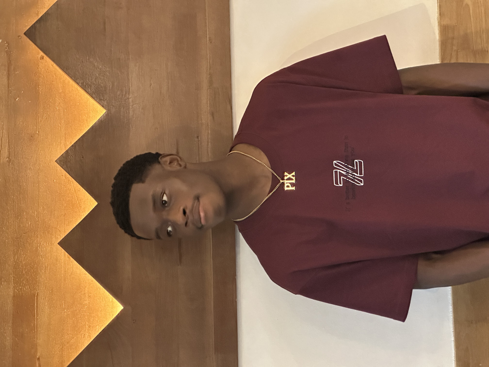

My Resume

Matthew P. Gonkerwon, Jr
Junior Student
Pursuing A Software Engineering Undergraduate Degree
I'm Currently Studying at the Independent University of Kigali. Over years
of online studies I've gained knowledge and hands on experience in the
Software engineering field.
Education
-
Completed Highschool at the Cyber-Ed Christian School of Excellence,
June 2022
- Junior Student At Independent University of Kigali
Work Experience
-
Completed Highschool at the Cyber-Ed Christian School of Excellence,
June 2022
- Junior Student At Independent University of Kigali
Skills
- Project Management
- Prommaging & Development
- Leadership
- Communication
Award & Certificate
- President of CCS in 2021
- Certificate in C Programming
- Highschool Diploma
Matthew P Gonkerwon, Jr
Contact Me
About Me
copyrights @matt June 2025